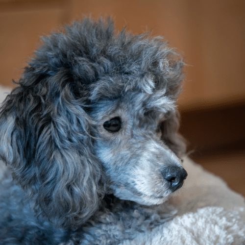
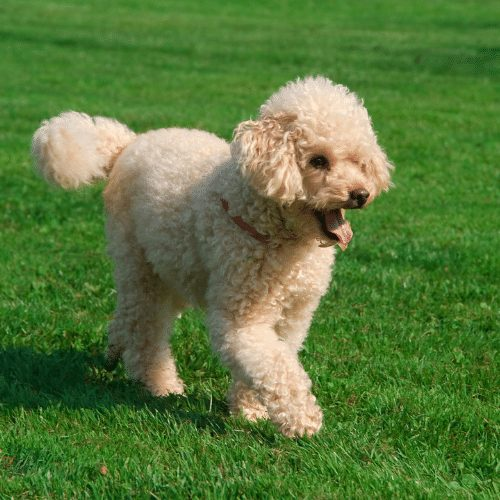
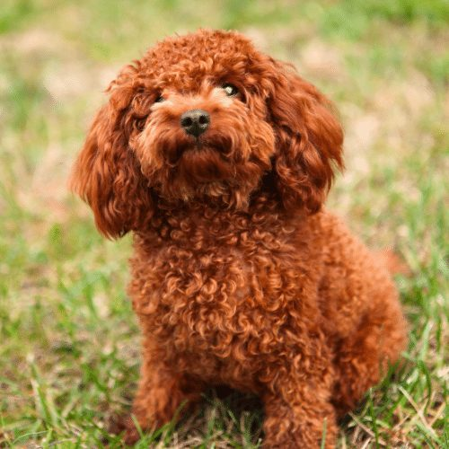

Poodles come in all shapes, sizes, and colors, to the point that the terminology can become quite
bewildering. Black puppies can turn blue, patterned, or multicolored Poodles are known as parti Poodles
but
aren’t always party Poodles, and ticked Poodles are spotty rather than ticked off.
In this article, we shed some light, rather than hair, on the rainbow world of Poodle colors, exploring
the
most common coat hues and patterns before delving deeper into the weird yet wonderful world of ticked
and
parti Poodles.
12 Common Solid Colors of the Poodle
Most Poodles, regardless of size, come in solid colors, some of which are more common than others.

Black
Black is one of the most common colors of Poodle and one of the 11 recognized by the American Kennel
Club (AKC). According to the AKC breed standard, in addition to his solid, black coat, a black
Poodle should also have “black noses, eye-rims and lips, black or self-colored toenails and very
dark eyes.”
A true black Poodle should be the color of black ink, with no noticeable tinting and a complete
absence of silver or white guard hairs. Such Poodles shouldn’t fade or “clear” as they age but
remain pure black into their dotage.
When a Poodle’s color lightens or fades, it’s known as “clearing” and some Poodle puppies that are
born black, clear within a year or two, becoming silver or blue.
Although black Poodles are often overlooked in favor of lighter-colored puppies or rescues, they are
no more aggressive or less intelligent than any other color Poodle.
There is one slight health discrepancy, however, in that studies have found that black and other
dark-colored Poodles are more susceptible to squamous cell carcinoma of the digit (SCDD) than other
lighter-colored dogs.
Due to their poor visibility at night, these dogs should always wear an LED collar when getting
walked in the dark.
Blue
Blue Poodles are often registered as black because that’s how they appear when firstborn. Some may
take a year to develop the blue tinge to their coats, while others hang onto the vestiges of their
puppyhood black for 24 months.
Experienced breeders can distinguish a blue puppy from a litter of black siblings immediately, based
on its coat’s brown tint. A quick examination of their paws may also reveal some silver or white
hairs between the pads.
As a blue Poodle puppy ages, so its color clears, becoming almost gun-metal grey. Some shading is
acceptable in blue Poodles, but to be true to the breed standard, they should, like the black
Poodle, have black noses, dark eyes, and black toenails.
As with any color variation, blue has little impact on the dog’s personality or health. It is an
accepted Poodle color and, unlike silver Poodles, for instance, is “naturally harsh” rather than
cottony.

Silver
Another diluted version of the black Poodle, like the blues, silvers are born black but will start to
clear much earlier. By the time they reach six weeks, silver hues will be apparent around the face
and paws, with the rest of the coat following suit over the next year or so.
As with the blue Poodle, a silver puppy will often have a “frosting of white on the underpads of the
feet” but will otherwise appear completely black.
Silver is recessive color, making it more difficult to breed for, and silver puppies are only really
guaranteed if both parents are also silver Poodles.
It’s been suggested that Miniature Poodles were the first to feature the silver coloration and then
passed the gene onto to their Toy cousins.
Silver Poodles are among the most difficult to breed, especially if you’re aiming for a near
platinum shade. In 1964, Linda Hopkins shared her dismay at the “dark, dismal steel” offerings being
produced, saying, “There is no more popular color than silver or none as greatly misunderstood.”
Ideally, for Hopkins, a silver Poodle should be as near pale platinum as possible, although she also
found the lavender-tinged Miniature Poodles bred by Mrs. M. Campbell Inglis “interesting.”
Gray
Like humans, some Poodles’ coats turn gray as they age. This process is caused by the Progressive
Graying gene which is found in some black, blue, and brown Poodles. A dominant mutation, if a parent
shows the tendency to gray as he or she ages, there’s a 50% chance the puppies will do the same.
Although some Poodles are born gray and remain that way throughout their lives, others will start to
change color at around two or three months of age, gradually fading as they mature.
Regardless of how the gray coat is produced this color is recognized by the AKC. Like the black,
blue, and silver Poodles, gray dogs should also have black noses and nails and dark-colored eyes.

Cream
Cream is one of several off-white colorations found in all sizes of Poodle, and distinguishing one
from another can be challenging. A cream Poodle is fairly easy to identify as it is one of the few
light-colored Poodles that have black rather than liver-colored noses.
Establishing whether a Poodle is white or cream is more difficult as both have black points and a
pale cream, in certain lights, may appear white. Experts will no doubt dismiss this confusion as
pure ignorance as the two are very different. While white indicates the complete absence of color,
the cream is a very diluted brown, not far from apricot.
Indeed, many cream-colored Poodles are born light or even medium brown and then clear as they
mature.

White
White is one of the most popular and most common colors for Poodles.
A white Poodle isn’t the same as an albino, however, as the former has black skin whereas the latter
will be pink.
Despite being white, a white Poodle belongs to the black hair type and therefore has a black nose,
nails, and eye-rims, as well as dark-colored eyes, giving it a striking appearance.
In the past, a white Poodle with pink toenails or a patch of pink skin would still have succeeded in
the show ring but, these days, the AKC insists on white Poodles with black extremities only.
White Poodles have similar temperaments to other colors, and some owners and breeders prefer the
white’s softer, more cottony coat to the harsh texture of for example a cream Poodle. This color
needs to be washed with a special shampoo for Poodles often to stay bright and clean.
Although there has been some evidence to suggest that white dogs of all breeds are more susceptible
to congenital deafness than others, this doesn’t appear to be the case with the Standard Poodle.
Both the Toy and the Miniature Poodle carry this trait, however, and it does appear to affect those
with white pigmentation more than other colors.
Brown
Once lumped together with Red Poodles, brown Poodles should ideally be the color of dark mahogany or
a rich walnut brown, as opposed to chestnut. Nevertheless, brown Poodles boast more color variations
and a wider range of hues than almost any of the other colors.
Most brown Poodles are born dark and then fade as they mature, producing stunning shades of cinnamon
brown and coffee.
One of the biggest problems facing the brown Poodle is its tendency to have very pale yellow, almost
green eyes. This is an undesirable trait in the show ring but difficult to eliminate in breeding.
Sun, chlorine, and other environmental factors can also bleach the brown Poodle’s coat which is why
you’re unlikely to find a dark chocolate-brown Poodle over the age of around seven years.
The most sought-after brown Poodles have amber-colored eyes, a liver nose, and dark toenails, as per
the breed standard.

Red
Up until 1980, red Poodles were considered brown, but since then, they’ve been a class of their own,
standing out from the competition with their chestnut, auburn, and copper hues.
Despite not being recognized in its own right until then, it’s now believed the red Poodle has a
unique gene, sometimes called the Rufus gene, that darkens the more common apricot color. Rufus is a
recessive allele, which is perhaps why red Poodles are so rare.
Whatever color the puppy, there’s no guarantee he’ll remain that same shade of red as he matures.
Red Poodles are particularly prone to color change, with some fading as they age and others
darkening.
Apricot
ULike red, apricot is a relatively new color for Poodles, having only been accepted into the breed
standard comparatively recently.
The first apricot-colored Standard Poodle was born in 1898 but categorized as liver at the time.
Since then, apricot Poodles have won a variety of prestigious awards, and their popularity has
continued.
Last year, world-famous Lionel Messi welcomed an apricot Toy Poodle named Abu into his family,
adding a splash of color and cuteness to the Messi tribe.